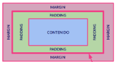

Uno de los conceptos más importantes que debemos recordar a la hora de elaborar CSS es que todos y cada uno de los elementos de mi página web son cajas
Eso, exactamente, ¿Qué significa?. Significa que todos los elementos que representan algo en HTML tiene la siguiente estructura visual:
Con este modelo debemos por lo tanto distinguir las siguientes zonas:Los elementos en bloque son elementos que, independientemente de la anchura que tengan, se separan verticalmente de los elementos anteriores y posteriores
Es como si "provocaran" un salto de línea antes y uno después (figuradamente hablando).
En cambio, los elementos en línea se van sucediendo a lo largo de la misma línea, mientras caben, uno detrás de otro y de izquierda a derecha al menos en nuestro idioma. Cuando no caben, pasan a la línea siguiente. Digamos que "fluyen" dependiendo de la anchura de la pantalla de nuestro navegador.
Representado gráficamente sería algo así: